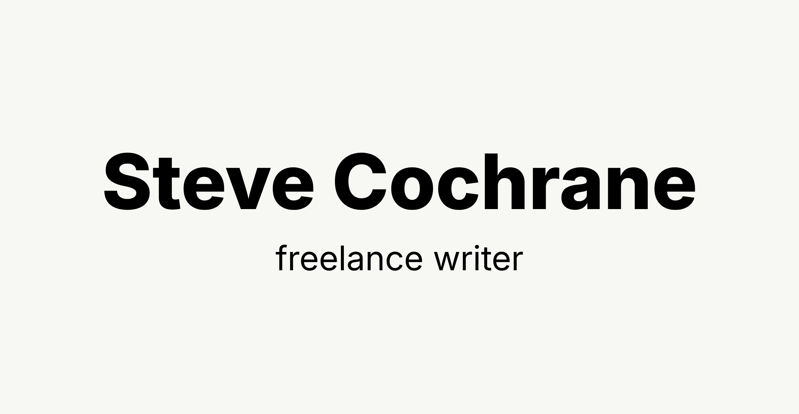
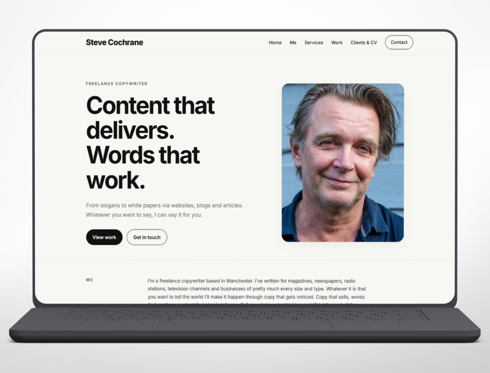
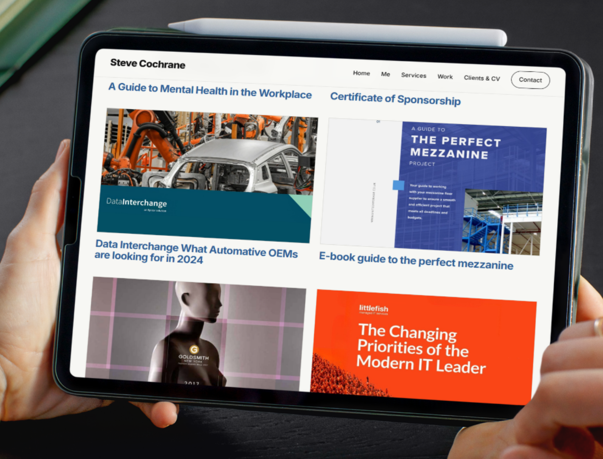
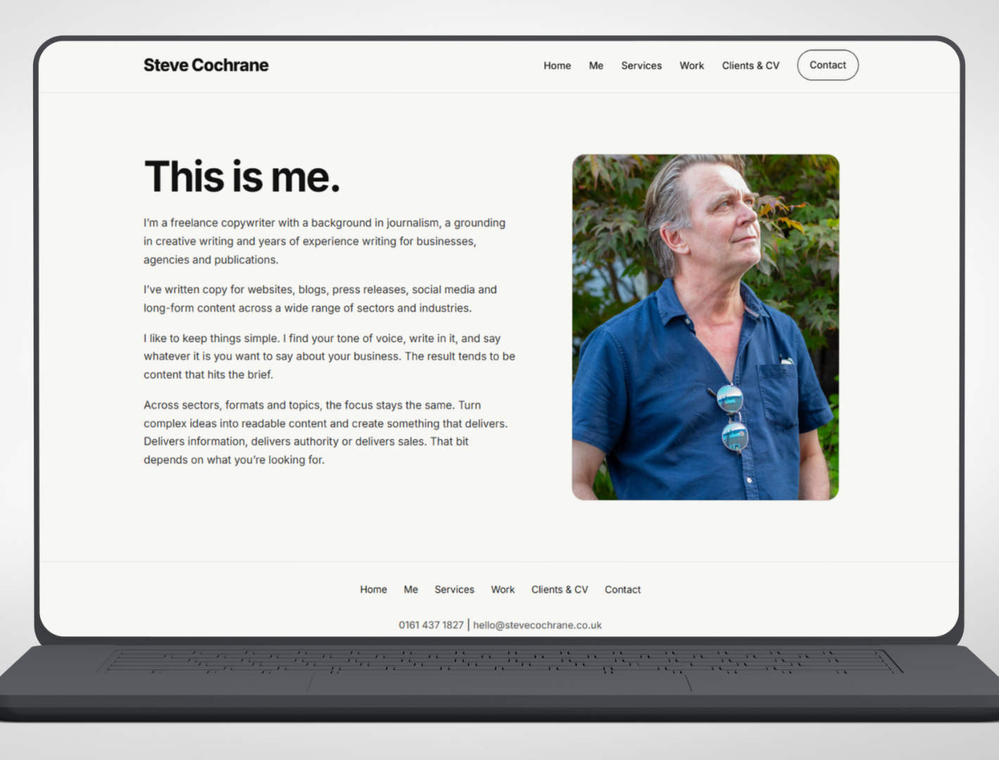
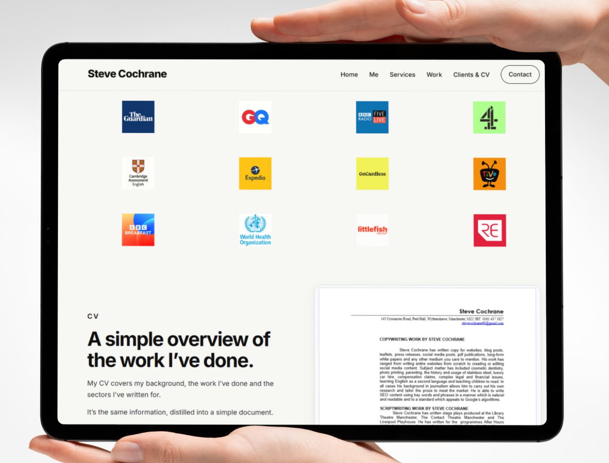

Back to Portfolio
Steve Cochrane
Creating a clear, professional website for an experienced writer, helping Steve present his services, published work, clients and career experience in one polished online portfolio.

Steve Cochrane is an experienced professional writer with a broad body of work across journalism, corporate communications, copywriting, editing and commissioned content. He needed a website that could bring that experience together clearly, while feeling personal, credible and easy for prospective clients to explore.
The brief
Steve needed a professional online home for his writing services and experience. The site had to explain what he does, demonstrate the range of his work and give potential clients a clear route to contact him.
With years of writing experience and a varied client history, one of the main challenges was presenting a large amount of information without making the website feel cluttered or overwhelming.
The design also needed to feel appropriate for a writer. It needed strong typography, plenty of space and a clean editorial quality, while remaining straightforward and easy to use.


How we helped
We created a complete multi-page website built around Steve's personal brand, writing experience and professional services.
The site structure was kept simple and purposeful, with dedicated pages for Steve's background, services, previous work, clients, CV and contact details. This makes it easy for visitors to quickly understand who Steve is, what he offers and whether his experience fits their project.
Strong typography and spacious layouts were used throughout to give the site an editorial feel. Rather than filling the pages with unnecessary visual effects, the design allows Steve's writing, credentials and experience to remain the focus.
We also created an expandable work section, allowing visitors to explore different examples without forcing them through a long, uninterrupted page of content.
- Bespoke multi-page website design and development
- Clear navigation covering Steve's services, work, clients and experience
- Strong editorial typography and content-focused layouts
- Expandable work portfolio for easier browsing
- Mobile-friendly layouts across every page
- Clear contact details and enquiry routes
- Custom domain connection and technical setup
- Consistent header, navigation and footer structure


The outcome
The finished website gives Steve a polished, professional online presence that reflects the depth of his writing experience without feeling corporate or impersonal.
Prospective clients can now quickly understand the services Steve offers, browse examples of his work, review his previous clients and experience, and contact him directly through a clear and consistent journey.
The site also gives Steve a flexible foundation that can grow over time. New work, clients, writing samples and services can be added without needing to rethink the overall structure.
The result is a focused portfolio website that presents a large body of professional experience in a simple, credible and approachable way.
- A complete professional website for Steve's writing services
- Clearer presentation of his background, services and experience
- A dedicated portfolio for showcasing previous work
- Improved mobile browsing across the entire website
- A clear route for new clients to make contact
- A flexible platform that can be expanded as Steve's portfolio grows
“The aim was to give Steve's experience the space it deserved, creating a website that feels professional and considered while making his services and previous work straightforward to explore.”
Piechart Digital
More work like this
Other projects from the portfolio.


Need a website?
Need a professional website for your business?
If you need a clear, professional website that presents your services properly and helps customers get in touch, talk to Piechart Digital.